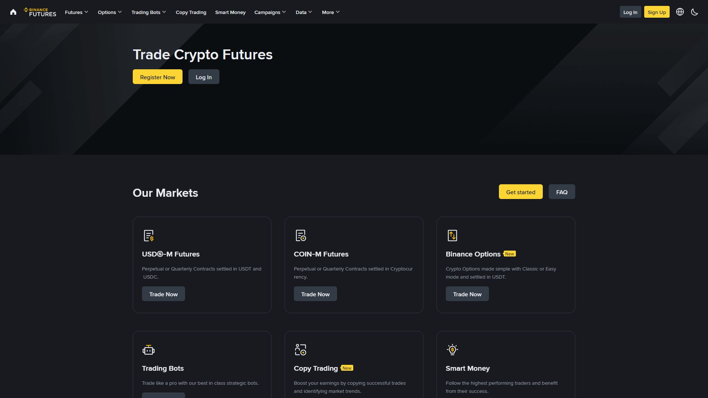

فیوچرز والٹ فیوچرز ٹریڈنگ کے لیے مختص الگ والٹ ہے۔ Spot والٹ سے الگ ہونے کی وجہ سے آپ کو Transfer کے ذریعے فنڈ منتقل کرنا ہوتا ہے۔ یہ باب USDⓈ-M اور COIN-M والٹس، Cross/Isolated مارجن، اور Unrealized P&L کو واضح کرے گا۔

Futures Wallet = صرف فیوچرز ٹریڈنگ کے لیے مخصوص خانہ۔ اس میں موجود فنڈز Spot مارکیٹ میں براہِ راست استعمال نہیں ہو سکتے۔
Spot Wallet : 500 USDT
Futures Wallet : 0 USDT
فیوچرز ٹریڈ کرنے کے لیے:
Spot → Transfer → Futures
→ پھر فیوچرز ٹریڈ ممکن ✅💡 یہ علیحدگی ایک تحفظ ہے — آپ کا Spot بیلنس خودبخود فیوچرز کے خطرے میں نہیں آتا۔ صرف وہی رقم خطرے میں ڈالیں جو آپ فیوچرز کے لیے مختص کریں۔
Margin USDT/USDC میں؛ منافع/نقصان بھی USDT میں۔
Futures Wallet : 500 USDT
Position : 5,000 USDT (10x)
P&L : USDT میںMargin BTC/ETH میں؛ منافع/نقصان اُسی کوائن میں۔
Futures Wallet : 0.01 BTC
Position : 0.05 BTC
P&L : BTC میں| فیچر | USDⓈ-M | COIN-M |
|---|---|---|
| بیس اثاثہ | USDT/USDC | BTC/ETH وغیرہ |
| P&L کرنسی | USDT | مقامی کوائن |
| سمجھنے میں | آسان | پیچیدہ |
| نئے صارفین | ✅ توصیہ | ❌ بعد میں |
💡 نوٹ: USDⓈ-M اور COIN-M کے الگ الگ والٹس ہیں۔ ان کے درمیان منتقلی کے لیے Spot والٹ سے گزرنا پڑتا ہے۔
1. Wallet → Transfer
2. From : Spot
3. To : Futures (USDM یا COINM)
4. Asset: USDT
5. Amount: مقدار درج کریں
6. Confirm ✅From : Spot → Futures (USDM)
Asset : USDT
Amount: 100 USDT
Time : فوری
Fee : عام طور پر مفت| From | To | کام |
|---|---|---|
| Spot | Futures | Transfer |
| Futures | Spot | واپس منتقلی |
| Spot | Earn | Subscribe / Transfer |
| Spot | Margin | Transfer |
💡 ہر اندرونی منتقلی فوری اور عموماً مفت ہوتی ہے۔
Futures Wallet : 200 USDT (پورا Margin)
Position : 2,000 USDT (10x)
اگر نقصان بڑھے → پورا والٹ خطرے میں، جلد LiquidationFutures Wallet : 200 USDT
Isolated Margin: 100 USDT (صرف ایک پوزیشن)
Position : 1,000 USDT (10x)
نقصان: صرف 100 USDT اس پوزیشن پر
باقی 100 USDT محفوظ ✅| قسم | کس کے لیے | خطرہ |
|---|---|---|
| Cross | تجربہ کار، پورے والٹ کا اشتراک | پورا والٹ خطرے میں |
| Isolated | نئے صارف، محدود خطرہ | صرف ایک پوزیشن |
💡 شروعات: ہمیشہ Isolated سے شروع کریں۔ جب تک Cross کی ذمہ داری سمجھ نہ آئے، استعمال نہ کریں۔
Unrealized P&L = کھلی پوزیشن کا موجودہ منافع/نقصان — بند کرنے سے پہلے "کاغذی" (unrealized) رہتا ہے۔
Long BTC @ 96,000 (0.1 BTC)
Mark Price: 98,000
Unrealized P&L = (98,000 − 96,000) × 0.1 = +200 USDT ✅
بند کرنے پر → Realized P&L = +200 USDT| اصطلاح | مطلب |
|---|---|
| Wallet Balance | کل/دستیاب فنڈ |
| Margin Balance | Wallet + Unrealized P&L |
| Available Balance | نئی پوزیشن کے لیے دستیاب |
| Unrealized P&L | کھلی پوزیشن کا منافع/نقصان |
| Maintenance Margin | پوزیشن کھلی رکھنے کے لیے کم از کم فنڈ |
💡 رنگ: سبز = منافع، سرخ = نقصان۔
جب Margin Balance < Maintenance Margin
→ Liquidation (پوزیشن خودکار بند)
لہذا Margin Balance کی نگرانی ضروری ہےFutures → Positions میں ہر پوزیشن کی تفصیل:
| عنصر | وضاحت |
|---|---|
| Symbol | جوڑا (BTC/USDT) |
| Side | Long یا Short |
| Size | مقدار |
| Entry Price | داخلہ قیمت |
| Mark Price | موجودہ مارک قیمت |
| Liq. Price | Liquidation قیمت |
| Margin | تفویض شدہ Margin |
| Unrealized P&L | منافع/نقصان |
| TP/SL | ہدف اور حفاظتی سطحیں |
⚠️ بائننس ہر پوزیشن پر Liq. Price خود دکھاتا ہے — وہی معتبر ہے۔
فیوچرز والٹ ایک الگ خانہ ہے — جب تک فنڈ وہاں منتقل نہ کریں، ٹریڈ شروع نہیں ہوگی۔ یہ علیحدگی دراصل ایک تحفظ ہے: Spot والٹ کے فنڈز خودبخود فیوچرز کے خطرے میں نہیں آتے۔
مگر یاد رکھیں: Futures والٹ کا ہر ڈالر Liquidation کے خطرے میں ہوتا ہے۔ کم لیوریج، Isolated Margin، ہر ٹریڈ پر SL اور پہلے Demo — یہی تحفظ کی چابی ہے۔